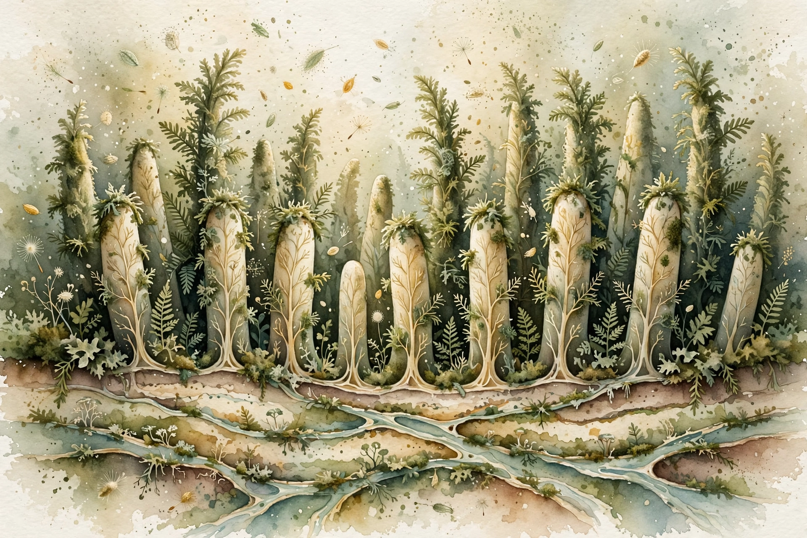

A 2018 Cell trial gave 21 healthy adults powerful antibiotics, then randomized them to probiotics, their own transplanted stool, or nothing. The probiotic group's gut lining still hadn't recovered at the study's end, while the stool-transplant group recovered within days.

When you finish a course of antibiotics, the advice arrives from every direction: your doctor mentions it, the pharmacist suggests it, and the supplement aisle insists on it. Take probiotics to replace the good bacteria the drugs wiped out. The reasoning feels airtight: antibiotics are indiscriminate, probiotics are reinforcements, and a multibillion-dollar industry has built an entire shelf of products around the idea.
A 2018 experiment put that reasoning to a test most studies never attempt. Instead of asking patients how they felt or analyzing stool samples, researchers at the Weizmann Institute of Science looked directly inside the gut. They gave 21 healthy volunteers a week of powerful antibiotics, then randomized them into three recovery strategies: an 11-strain probiotic taken twice daily for a month, a transplant of their own stool banked before the antibiotics, or nothing at all. Then they sampled the actual gut lining, before, during, and after, with endoscopies and colonoscopies.
In 2021, American clinicians wrote 211.1 million outpatient antibiotic prescriptions, according to the CDC. Now suppose just 1 in 10 of those courses is paired with a probiotic, a conservative guess given how routinely the pairing is recommended. The arithmetic: 211.1 million × 0.10 = about 21 million Americans a year taking a product meant to speed their gut's recovery. If the Weizmann finding holds in the real world, a meaningful share of those 21 million people are not speeding recovery; they are slowing it. The calculation is crude and the 1-in-10 assumption is mine, not the CDC's, but it sets the stakes: this is not a niche supplement question. It is one of the most common drug-supplement pairings in medicine.
The antibiotics did what antibiotics do. A week of ciprofloxacin (500 mg twice daily) plus metronidazole (500 mg three times daily) knocked the gut microbiome flat, and then the three groups diverged. The people who took nothing recovered on their own, their mucosal microbiomes drifting back toward baseline. The people who received their own stool, frozen before the drugs and reintroduced afterward, recovered fastest, with rapid and near-complete restoration within days of administration.
The probiotic group went the other way, and the contrast was stark. Compared with spontaneous recovery, the 11-strain preparation produced what the authors called a markedly delayed and persistently incomplete reconstitution of the gut lining's microbial community. The disruption was not limited to bacteria, because the host's own gene-expression patterns in the gut wall, which normally snap back after antibiotics, also lagged. At the study's final follow-up, the probiotic group's mucosal microbiome still had not returned to its pre-antibiotic configuration.
Lab work suggested a mechanism: in petri-dish experiments, soluble factors secreted by the Lactobacillus strains in the probiotic directly inhibited the growth of the gut's native microbes. The reinforcements were not merely failing to help. They appeared to be actively suppressing the residents they were supposed to assist.
The study also exposed a measurement problem that reaches beyond this trial. Throughout the trial, the team collected stool samples alongside the invasive biopsies, and the stool told a different, quieter story. Examining stool alone neither described what the probiotics were doing in the gut nor predicted it. Nearly all the human evidence for probiotics rests on stool analysis. This trial suggests the standard lens has been pointed at the wrong tissue.
A companion paper published the same day in Cell, by the same group, added a second surprise. The 11-strain probiotic colonized some volunteers' guts easily and barely registered in others, in patterns predictable from each person's baseline microbiome and gene expression. One-size-fits-all dosing was already questionable before the recovery results, and it looks worse after them.
The case for probiotics deserves its full weight, because it is real. A 2021 meta-analysis in BMJ Open pooled 42 randomized trials with 11,305 adults and found that taking probiotics with antibiotics cut the risk of antibiotic-associated diarrhea by 37 percent (risk ratio 0.63, 95% CI 0.54 to 0.73), with moderate-quality evidence. Diarrhea during antibiotics is miserable and sometimes dangerous, and preventing more than a third of cases is a genuine clinical win.
The honest reading holds both results at once. Probiotics appear to reduce a short-term symptom while also appearing to slow the long-term rebuilding of the gut's microbial community. These are different outcomes measured on different timescales, and a treatment can improve one while harming the other. Whether slower mucosal recovery translates into real illness, more infections, or worse digestion is unmeasured. The trial tracked microbial composition and gene expression, not hospitalizations or symptom diaries.
There are other caveats the skeptics will raise, and they are fair. Twenty-one people is a small trial, even a beautifully instrumented one. The volunteers were healthy adults given a specific heavy-duty combination, ciprofloxacin plus metronidazole, and the results may not generalize to amoxicillin for a sinus infection or to patients who are actually sick. The probiotic was one 11-strain formulation, and the meta-analysis found that only certain strains, mostly Lactobacillus and Bifidobacterium, prevent diarrhea. Extrapolating from one product to the whole shelf is exactly the one-size-fits-all thinking the companion paper undermines.
Several limits deserve naming. This study did not prove probiotics are useless or harmful in any general sense. It tested one formulation, in healthy people, after one antibiotic regimen, and measured ecological recovery rather than clinical outcomes. It has not been independently replicated: no other team has repeated the invasive sampling protocol, so the finding stands on a single trial, however rigorous. The diarrhea benefit from the meta-analyses stands on far more people and deserves equal billing. And the trial says nothing about fermented foods, which contain different microbes in different matrices, or about probiotics taken for reasons unrelated to antibiotics.
The advice to take probiotics after antibiotics rests on a plausible story and a genuine benefit: less diarrhea. What it did not rest on, until 2018, was any direct look at what happens inside the gut lining. That look found the reinforcements slowing the rebuild while the patients' own banked stool restored it in days. If your goal is avoiding a miserable week of diarrhea, the evidence for probiotics is solid. If your goal is getting your gut's ecosystem back to normal, this trial suggests the most popular strategy may be working against you.
If you are prescribed antibiotics, ask your doctor what outcome you are optimizing for. If diarrhea prevention is the concern, the meta-analysis evidence supports specific high-dose Lactobacillus and Bifidobacterium strains, and only where your baseline risk is moderate to high. If gut recovery is the concern, this trial suggests skipping the probiotic and letting the ecosystem rebuild on its own, a strategy the watchful-waiting group handled fine. Do not confuse stool-test marketing with mucosal evidence: a product that "supports digestive health" in a stool study has not been tested the way this one was. And if you take probiotics for other reasons, keep them in their lane. Nothing in this research challenges their use outside the post-antibiotic window.